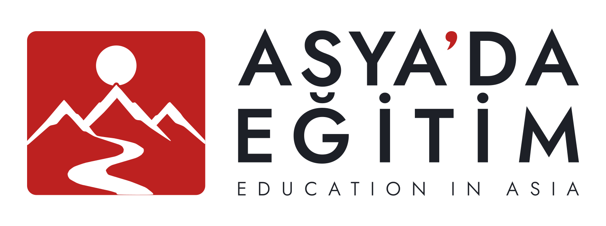
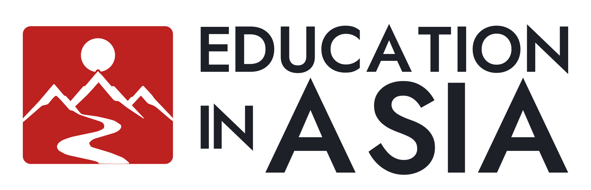
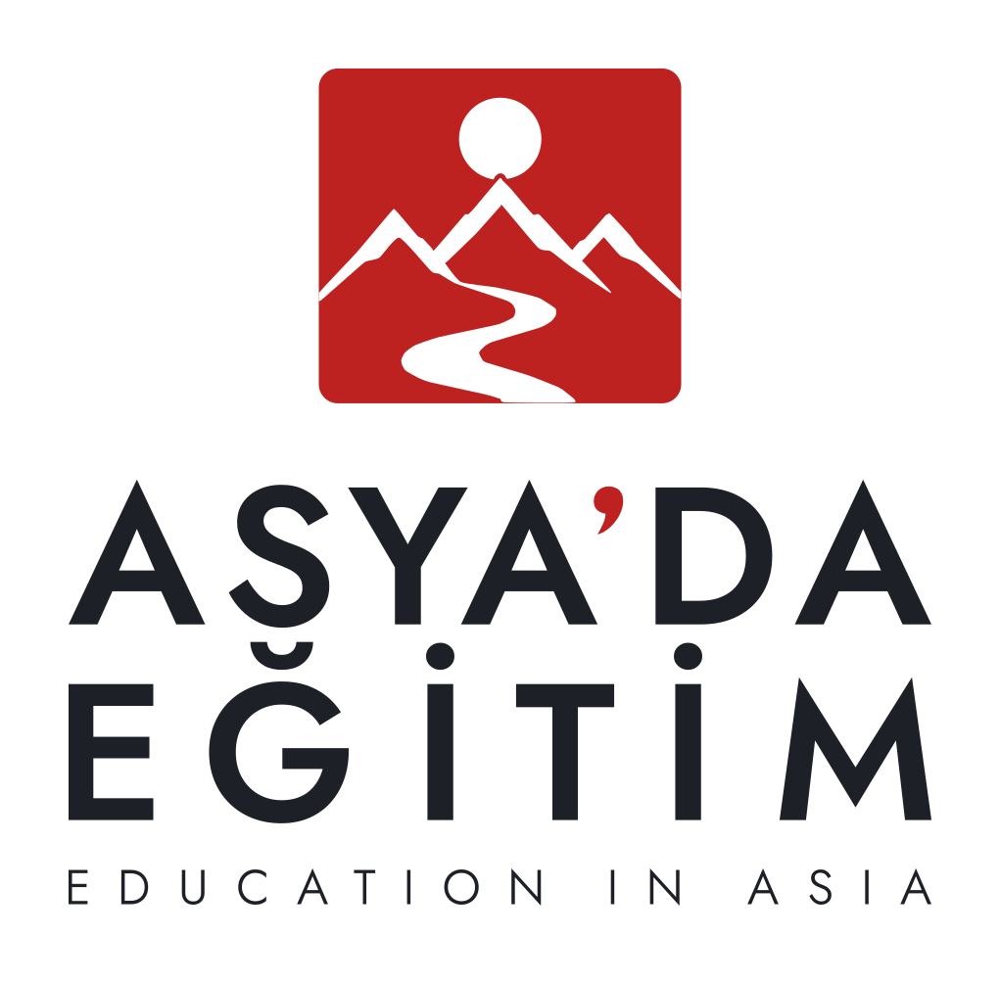
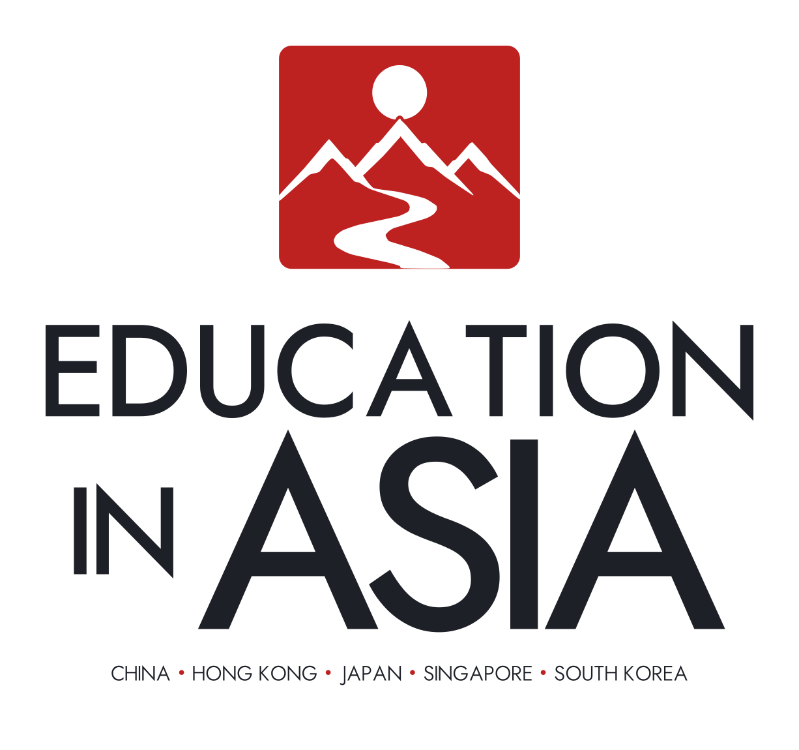

Asya'da Eğitim / Logo kimliği / English-only review
Education in Asia.
V4.1 · Sıkılaştırılmış alt satır: IN küçük, ASIA baskın. Sadece yazı yerleşimi değişti; orijinal mühür ve resmî Türkçe logo dokunulmadı.
Asya'da Eğitim markasının İngilizce isimle oluşturulan vektörel logo adayları. Onaylı V-01 mühür birebir korunur; Türkçe ana logodaki beş harf konturu aynen yeniden kullanılır, diğer İngilizce harfler aynı Jost 550 font kaynağından gerçek vektör olarak üretilir. Açık/koyu/tek renk kimliği korunur. Türkçe ve çift dilli onaylı logolar etkilenmez.
Yatay karşılaştırma
Mevcut H-02 çift dilli logo ve İngilizce-only H-EN-02 yan yana. Aynı onaylı mühür kullanılır.




Dikey karşılaştırma
Mevcut P-01 ile İngilizce-only P-EN-01. Aynı V4 alt satır hiyerarşisi dikey düzen için de korunuyor.

